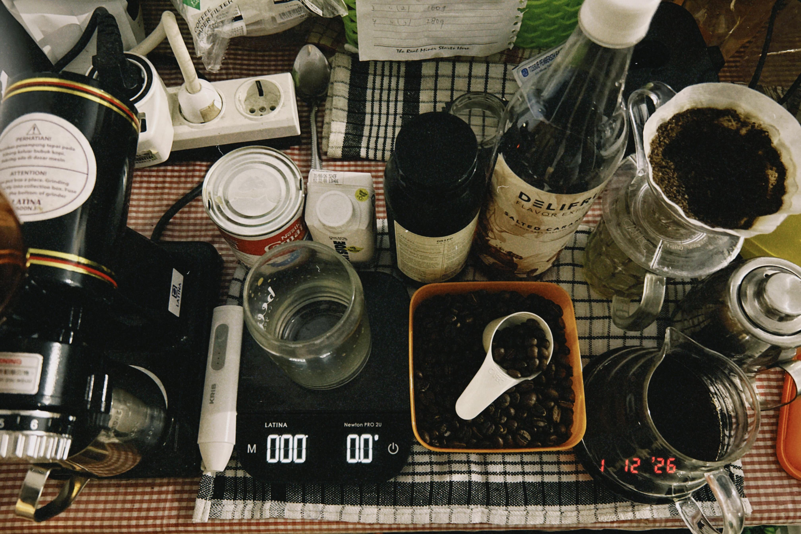

Alam selalu punya cara tersendiri untuk menghadirkan ketenangan. Bagiku, menjelajahi tempat-tempat bernuansa alam bukan sekadar hobi, tetapi juga cara untuk melepas penat dari rutinitas sehari-hari. Dibandingkan menghabiskan waktu di kafe, aku lebih memilih pergi ke tempat-tempat dengan udara segar dan pemandangan alami.
Setiap perjalanan ke alam selalu memberi pengalaman yang berbeda. Mulai dari pegunungan, taman, hingga tempat wisata yang masih asri, semuanya menghadirkan suasana yang menenangkan. Di sana, aku bisa menikmati hal-hal sederhana seperti hembusan angin, suara daun, dan pemandangan yang menyejukkan mata.
Fotografi menjadi caraku untuk mengabadikan setiap momen itu. Lewat lensa kamera, aku mencoba menangkap keindahan alam yang sering kali terlewatkan. Setiap foto yang kuambil bukan hanya sekadar gambar, tetapi juga menyimpan cerita dan kenangan dari perjalanan yang kulalui.
Lebih dari itu, semua pengalaman ini mengajarkanku untuk lebih bersyukur. Melihat keindahan alam membuatku sadar bahwa ada banyak hal sederhana dalam hidup yang patut dihargai. Alam mengingatkanku untuk menikmati setiap momen tanpa terburu-buru.
Bagiku, menjelajahi alam bukan hanya tentang pergi ke suatu tempat, tetapi juga tentang menemukan ketenangan, kebahagiaan, dan rasa syukur. Melalui setiap perjalanan dan setiap foto yang kuabadikan, aku belajar untuk lebih menghargai hidup apa adanya.

Tidak pernah menyangka, kopi akan menjadi bagian penting dalam perjalan hidupku. Semua dimulai dengan sangat sederhana—segelas kopi saset yang di campur dengan susu, air, dan es batu. Hanya untuk menikmati rasa yang menemani hari.
Namun, kesederhanaan itu memicu keinginan saya untuk belajar meracik kopi yang lebih baik. hingga akhirnya, kopi bukan lagi sekadar minuman bagiku. Ia menjadi sesuatu yang saya nikmati, bukan hanya untuk diminum, tetapi juga untuk dipelajari..
Perjalanan ini membawaku masuk lebih jauh di dunia kopi. Mempelajari jenis biji kopi, cara penyeduhan, hingga akhirnya memiliki mesin kopi sendiri. Dari situ, aku mulai meracik kopi layaknya seorang barista. Setiap langkah menjadi penting: takaran kopi, suhu air, dan cara penyeduhan. Semua terasa seperti seni yang hidup dalam setiap cangkir.
Semakin dipelajari, semakin aku sadar bahwa kopi bukan dunia yang sederhana—semakin dalam dipelajari, semakin terasa kompleks. Banyak hal kecil yang nyatanya berpengaruh besar pada rasa kopi. Itulah yang membuat kopi tidak pernah membosankan.
Bagiku, kopi adalah sebuah seni. Tidak ada satu cara yang mutlak benar dalam menyeduhnya—setiap orang memiliki gaya dan sentuhan pribadi yang berbeda. Ada yang menyukai rasa yang kuat dan pekat, ada pula yang lebih menikmati rasa yang ringan dan halus. Karena pada akhirnya kopi adalah tentang selera dan ekspresi diri. Begitu juga dengan kehidupan. Tidak ada satu jalan yang bisa dianggap paling benar untuk semua orang. Setiap orang memiliki caranya sendiri dalam menjalani hidup, mengekspresikan diri, dan menemukan kebahagiaannya. Dan justru dari perbedaan itulah, hidup menjadi lebih berwarna.
Dan seperti halnya sebuah karya seni, setiap cangkir kopi yang dibuat bukan hanya tentang hasil akhir, tetapi juga tentang perasaan dan makna di balik prosesnya. Dalam setiap racikan, ada sentuhan pribadi yang ku tuangkan—sebuah cara sederhana untuk berbagi cinta dengan orang-orang terdekat. Melalui kopi, aku tidak hanya menyajikan minuman, tetapi juga menghadirkan pengalaman, cerita, dan cinta dari diriku untuk dinikmati bersama.
Di situlah aku semakin memahami bahwa coffee is more than just a drink. Ia adalah tempat untuk melukisan cerita dan membagikan cinta.
Bulu tangkis adalah olahraga pertamaku, dan sejak kecil aku sudah sangat menyukainya. Dulu, aku sering bermain hanya untuk bersenang-senang bersama teman-teman. Tidak ada target atau tekanan, yang ada hanyalah tawa dan kebahagiaan setiap kali memukul shuttlecock.
Seiring waktu, banyak tren olahraga baru bermunculan. Bahkan sekarang olahraga seperti padel mulai populer dan banyak dimainkan orang-orang. Namun, sampai saat ini, bulu tangkis tetap memiliki tempat tersendiri di hatiku. Ada kenangan dan rasa nyaman yang tidak bisa tergantikan oleh olahraga lain.
Sayangnya, kesibukan membuatku jadi jarang bermain. Sebenarnya, aku tahu bahwa waktuku masih bisa diatur jika benar-benar ingin bermain bulu tangkis. Namun, terkadang hal sederhana seperti tidak adanya teman bermain menjadi alasan yang membuatku menunda. Padahal, keinginan itu masih ada.
Dari bulu tangkis, aku belajar banyak hal tentang kehidupan. Seperti dalam permainan, kadang kita harus berlari mengejar bola, kadang kita harus bertahan, dan kadang juga harus menyerang. Tidak semua pukulan akan berhasil, dan tidak semua permainan bisa kita menangkan. Namun yang terpenting adalah tetap berusaha dan tidak menyerah.
Bagiku, bulu tangkis bukan hanya sekadar olahraga, tetapi juga pengingat bahwa dalam hidup, kita harus terus bergerak, mencoba, dan menikmati setiap momen yang ada.